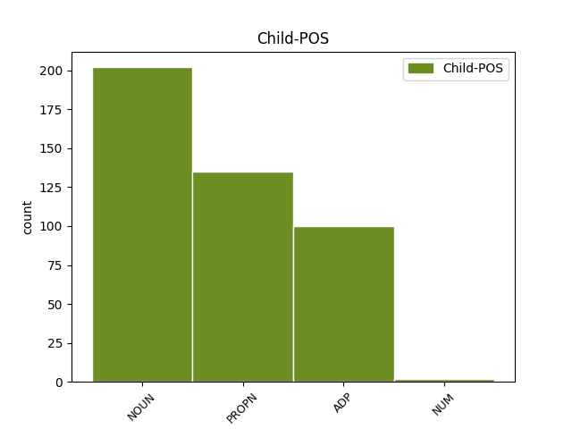

Distribution of features within this leaf

Agreement Rules sorted by frequency.
- When the dependent token is the compound(compound) of the head token, and the head token is NOUN and the dependent token is PROPN.
1 Republika republika NOUN Ncfsn Case=Nom|Gender=Fem|Number=Sing 0 _ _ _
2 Hrvatska Hrvatska PROPN Npfsn Case=Nom|Gender=Fem|Number=Sing 1 compound _ _
3 prihvatila _ _ _ _ 0 _ _ _
4 je _ _ _ _ 0 _ _ _
5 ovaj _ _ _ _ 0 _ _ _
6 način _ _ _ _ 0 _ _ _
7 obilježavanja _ _ _ _ 0 _ _ _
8 biološke _ _ _ _ 0 _ _ _
9 raznolikosti _ _ _ _ 0 _ _ _
10 odlukom _ _ _ _ 0 _ _ _
11 Hrvatskog _ _ _ _ 0 _ _ _
12 sabora _ _ _ _ 0 _ _ _
13 donošenjem _ _ _ _ 0 _ _ _
14 Zakona _ _ _ _ 0 _ _ _
15 o _ _ _ _ 0 _ _ _
16 zaštiti _ _ _ _ 0 _ _ _
17 prirode _ _ _ _ 0 _ _ _
18 . _ _ _ _ 0 _ _ _
1 Vrata _ _ _ _ 0 _ _ _
2 Obrtničke _ _ _ _ 0 _ _ _
3 komore _ _ _ _ 0 _ _ _
4 Zagreb _ _ _ _ 0 _ _ _
5 i _ _ _ _ 0 _ _ _
6 Udruženja udruženje NOUN Ncnsg Case=Gen|Gender=Neut|Number=Sing 0 _ _ _
7 obrtnika obrtnik NOUN Ncmpg Case=Gen|Gender=Masc|Number=Plur 6 compound _ _
8 uvijek _ _ _ _ 0 _ _ _
9 su _ _ _ _ 0 _ _ _
10 otvorena _ _ _ _ 0 _ _ _
11 za _ _ _ _ 0 _ _ _
12 Vas _ _ _ _ 0 _ _ _
1 Druga _ _ _ _ 0 _ _ _
2 dva _ _ _ _ 0 _ _ _
3 nastavka _ _ _ _ 0 _ _ _
4 feljtona _ _ _ _ 0 _ _ _
5 - _ _ _ _ 0 _ _ _
6 " _ _ _ _ 0 _ _ _
7 Nespremna _ _ _ _ 0 _ _ _
8 za za ADP Sa Case=Acc 10 compound _ _
9 životnu _ _ _ _ 0 _ _ _
10 ulogu uloga NOUN Ncfsa Case=Acc|Gender=Fem|Number=Sing 0 _ _ _
11 " _ _ _ _ 0 _ _ _
12 i _ _ _ _ 0 _ _ _
13 " _ _ _ _ 0 _ _ _
14 Priča _ _ _ _ 0 _ _ _
15 o _ _ _ _ 0 _ _ _
16 dva _ _ _ _ 0 _ _ _
17 grada _ _ _ _ 0 _ _ _
18 " _ _ _ _ 0 _ _ _
19 , _ _ _ _ 0 _ _ _
20 spekuliraju _ _ _ _ 0 _ _ _
21 izdaleka _ _ _ _ 0 _ _ _
22 o _ _ _ _ 0 _ _ _
23 nekim _ _ _ _ 0 _ _ _
24 njenim _ _ _ _ 0 _ _ _
25 intimnim _ _ _ _ 0 _ _ _
26 vezama _ _ _ _ 0 _ _ _
27 , _ _ _ _ 0 _ _ _
28 pa _ _ _ _ 0 _ _ _
29 Ekspertni _ _ _ _ 0 _ _ _
30 tim _ _ _ _ 0 _ _ _
31 postavlja _ _ _ _ 0 _ _ _
32 pitanje _ _ _ _ 0 _ _ _
33 " _ _ _ _ 0 _ _ _
34 zašto _ _ _ _ 0 _ _ _
35 su _ _ _ _ 0 _ _ _
36 samoubilačka _ _ _ _ 0 _ _ _
37 raspoloženja _ _ _ _ 0 _ _ _
38 dolazila _ _ _ _ 0 _ _ _
39 neposredno _ _ _ _ 0 _ _ _
40 nakon _ _ _ _ 0 _ _ _
41 najvećih _ _ _ _ 0 _ _ _
42 priznanja _ _ _ _ 0 _ _ _
43 ili _ _ _ _ 0 _ _ _
44 ostvarenja _ _ _ _ 0 _ _ _
45 ljubavnih _ _ _ _ 0 _ _ _
46 veza _ _ _ _ 0 _ _ _
47 kojima _ _ _ _ 0 _ _ _
48 je _ _ _ _ 0 _ _ _
49 toliko _ _ _ _ 0 _ _ _
50 težila _ _ _ _ 0 _ _ _
51 ? _ _ _ _ 0 _ _ _
52 " _ _ _ _ 0 _ _ _
1 Jedanaestogodišnja _ _ _ _ 0 _ _ _
2 ženka _ _ _ _ 0 _ _ _
3 vodenkonja _ _ _ _ 0 _ _ _
4 teška _ _ _ _ 0 _ _ _
5 dvije dva NUM Mlcf-a Case=Acc|Gender=Fem|Number=Plur|NumType=Card 6 compound _ _
6 tone tona NOUN Ncfpa Case=Acc|Gender=Fem|Number=Plur 0 _ _ _
7 našla _ _ _ _ 0 _ _ _
8 se _ _ _ _ 0 _ _ _
9 u _ _ _ _ 0 _ _ _
10 glavnim _ _ _ _ 0 _ _ _
11 vijestima _ _ _ _ 0 _ _ _
12 međunarodnih _ _ _ _ 0 _ _ _
13 medija _ _ _ _ 0 _ _ _
14 12. _ _ _ _ 0 _ _ _
15 siječnja _ _ _ _ 0 _ _ _
16 , _ _ _ _ 0 _ _ _
17 kada _ _ _ _ 0 _ _ _
18 je _ _ _ _ 0 _ _ _
19 njezino _ _ _ _ 0 _ _ _
20 mjesto _ _ _ _ 0 _ _ _
21 boravka _ _ _ _ 0 _ _ _
22 na _ _ _ _ 0 _ _ _
23 Skadarskom _ _ _ _ 0 _ _ _
24 jezeru _ _ _ _ 0 _ _ _
25 poplavljeno _ _ _ _ 0 _ _ _
26 nakon _ _ _ _ 0 _ _ _
27 tjedana _ _ _ _ 0 _ _ _
28 jakih _ _ _ _ 0 _ _ _
29 kišnih _ _ _ _ 0 _ _ _
30 oborina _ _ _ _ 0 _ _ _
31 , _ _ _ _ 0 _ _ _
32 što _ _ _ _ 0 _ _ _
33 joj _ _ _ _ 0 _ _ _
34 je _ _ _ _ 0 _ _ _
35 omogućilo _ _ _ _ 0 _ _ _
36 da _ _ _ _ 0 _ _ _
37 otpliva _ _ _ _ 0 _ _ _
38 preko _ _ _ _ 0 _ _ _
39 ograde _ _ _ _ 0 _ _ _
40 i _ _ _ _ 0 _ _ _
41 luta _ _ _ _ 0 _ _ _
42 po _ _ _ _ 0 _ _ _
43 obližnjim _ _ _ _ 0 _ _ _
44 selima _ _ _ _ 0 _ _ _
45 . _ _ _ _ 0 _ _ _
Disagree Examples:
1 Taseva _ _ _ _ 0 _ _ _
2 je _ _ _ _ 0 _ _ _
3 rekla _ _ _ _ 0 _ _ _
4 da _ _ _ _ 0 _ _ _
5 je _ _ _ _ 0 _ _ _
6 Transparency _ _ _ _ 0 _ _ _
7 podnio _ _ _ _ 0 _ _ _
8 zahtjev _ _ _ _ 0 _ _ _
9 Ustavnom _ _ _ _ 0 _ _ _
10 sudu sud NOUN Ncmsd Case=Dat|Gender=Masc|Number=Sing 0 _ _ _
11 Makedonije Makedonija PROPN Npfsg Case=Gen|Gender=Fem|Number=Sing 10 compound _ _
12 za _ _ _ _ 0 _ _ _
13 preispitivanje _ _ _ _ 0 _ _ _
14 zakonitosti _ _ _ _ 0 _ _ _
15 zapljene _ _ _ _ 0 _ _ _
16 . _ _ _ _ 0 _ _ _
1 Komšić _ _ _ _ 0 _ _ _
2 , _ _ _ _ 0 _ _ _
3 hrvatski _ _ _ _ 0 _ _ _
4 član _ _ _ _ 0 _ _ _
5 tročlanog _ _ _ _ 0 _ _ _
6 predsjedništva _ _ _ _ 0 _ _ _
7 , _ _ _ _ 0 _ _ _
8 jedan _ _ _ _ 0 _ _ _
9 je _ _ _ _ 0 _ _ _
10 od _ _ _ _ 0 _ _ _
11 najpopularnijih _ _ _ _ 0 _ _ _
12 političara _ _ _ _ 0 _ _ _
13 u _ _ _ _ 0 _ _ _
14 Federaciji federacija NOUN Ncfsl Case=Loc|Gender=Fem|Number=Sing 0 _ _ _
15 Bosne Bosna PROPN Npfsg Case=Gen|Gender=Fem|Number=Sing 14 compound _ _
16 i _ _ _ _ 0 _ _ _
17 Hercegovine _ _ _ _ 0 _ _ _
18 . _ _ _ _ 0 _ _ _
1 Mnogi _ _ _ _ 0 _ _ _
2 članovi _ _ _ _ 0 _ _ _
3 stranke _ _ _ _ 0 _ _ _
4 smatrali _ _ _ _ 0 _ _ _
5 su _ _ _ _ 0 _ _ _
6 da _ _ _ _ 0 _ _ _
7 je _ _ _ _ 0 _ _ _
8 Lagumdžijina _ _ _ _ 0 _ _ _
9 odluka _ _ _ _ 0 _ _ _
10 o _ _ _ _ 0 _ _ _
11 ulasku _ _ _ _ 0 _ _ _
12 u _ _ _ _ 0 _ _ _
13 koaliciju _ _ _ _ 0 _ _ _
14 sa _ _ _ _ 0 _ _ _
15 Strankom stranka NOUN Ncfsi Case=Ins|Gender=Fem|Number=Sing 0 _ _ _
16 demokratske _ _ _ _ 0 _ _ _
17 akcije akcija NOUN Ncfsg Case=Gen|Gender=Fem|Number=Sing 15 compound _ _
18 ( _ _ _ _ 0 _ _ _
19 SDA _ _ _ _ 0 _ _ _
20 ) _ _ _ _ 0 _ _ _
21 bila _ _ _ _ 0 _ _ _
22 autokratska _ _ _ _ 0 _ _ _
23 -- _ _ _ _ 0 _ _ _
24 a _ _ _ _ 0 _ _ _
25 potpunom _ _ _ _ 0 _ _ _
26 izdajom _ _ _ _ 0 _ _ _
27 proglasila _ _ _ _ 0 _ _ _
28 ju _ _ _ _ 0 _ _ _
29 je _ _ _ _ 0 _ _ _
30 i _ _ _ _ 0 _ _ _
31 većina _ _ _ _ 0 _ _ _
32 stranačkih _ _ _ _ 0 _ _ _
33 krugova _ _ _ _ 0 _ _ _
34 , _ _ _ _ 0 _ _ _
35 kao _ _ _ _ 0 _ _ _
36 i _ _ _ _ 0 _ _ _
37 građana _ _ _ _ 0 _ _ _
38 koji _ _ _ _ 0 _ _ _
39 su _ _ _ _ 0 _ _ _
40 izrazili _ _ _ _ 0 _ _ _
41 potporu _ _ _ _ 0 _ _ _
42 SDP-u _ _ _ _ 0 _ _ _
43 na _ _ _ _ 0 _ _ _
44 izborima _ _ _ _ 0 _ _ _
45 . _ _ _ _ 0 _ _ _
1 Zastoj _ _ _ _ 0 _ _ _
2 proizlazi _ _ _ _ 0 _ _ _
3 iz _ _ _ _ 0 _ _ _
4 činjenice _ _ _ _ 0 _ _ _
5 da _ _ _ _ 0 _ _ _
6 Savezu savez NOUN Ncmsd Case=Dat|Gender=Masc|Number=Sing 0 _ _ _
7 za za ADP Sa Case=Acc 6 compound _ _
8 europsku _ _ _ _ 0 _ _ _
9 integraciju _ _ _ _ 0 _ _ _
10 -- _ _ _ _ 0 _ _ _
11 koji _ _ _ _ 0 _ _ _
12 ima _ _ _ _ 0 _ _ _
13 većinu _ _ _ _ 0 _ _ _
14 glasova _ _ _ _ 0 _ _ _
15 u _ _ _ _ 0 _ _ _
16 parlamentu _ _ _ _ 0 _ _ _
17 -- _ _ _ _ 0 _ _ _
18 nedostaju _ _ _ _ 0 _ _ _
19 dva _ _ _ _ 0 _ _ _
20 glasa _ _ _ _ 0 _ _ _
21 , _ _ _ _ 0 _ _ _
22 dok _ _ _ _ 0 _ _ _
23 su _ _ _ _ 0 _ _ _
24 predstavnici _ _ _ _ 0 _ _ _
25 Komunističke _ _ _ _ 0 _ _ _
26 stranke _ _ _ _ 0 _ _ _
27 odbijali _ _ _ _ 0 _ _ _
28 glasovati _ _ _ _ 0 _ _ _
29 za _ _ _ _ 0 _ _ _
30 kandidata _ _ _ _ 0 _ _ _
31 Saveza _ _ _ _ 0 _ _ _
32 . _ _ _ _ 0 _ _ _
1 Setimes _ _ _ _ 0 _ _ _
2 : _ _ _ _ 0 _ _ _
3 Nedavno _ _ _ _ 0 _ _ _
4 je _ _ _ _ 0 _ _ _
5 veleposlanik _ _ _ _ 0 _ _ _
6 SAD-a _ _ _ _ 0 _ _ _
7 podsjetio _ _ _ _ 0 _ _ _
8 na _ _ _ _ 0 _ _ _
9 potrebu _ _ _ _ 0 _ _ _
10 implementacije _ _ _ _ 0 _ _ _
11 svibanjskog _ _ _ _ 0 _ _ _
12 sporazuma _ _ _ _ 0 _ _ _
13 vlade _ _ _ _ 0 _ _ _
14 i _ _ _ _ 0 _ _ _
15 Demokratske _ _ _ _ 0 _ _ _
16 unije unija NOUN Ncfsg Case=Gen|Gender=Fem|Number=Sing 0 _ _ _
17 za za ADP Sa Case=Acc 16 compound _ _
18 ujedinjenje _ _ _ _ 0 _ _ _
19 ( _ _ _ _ 0 _ _ _
20 DUI _ _ _ _ 0 _ _ _
21 ) _ _ _ _ 0 _ _ _
22 . _ _ _ _ 0 _ _ _